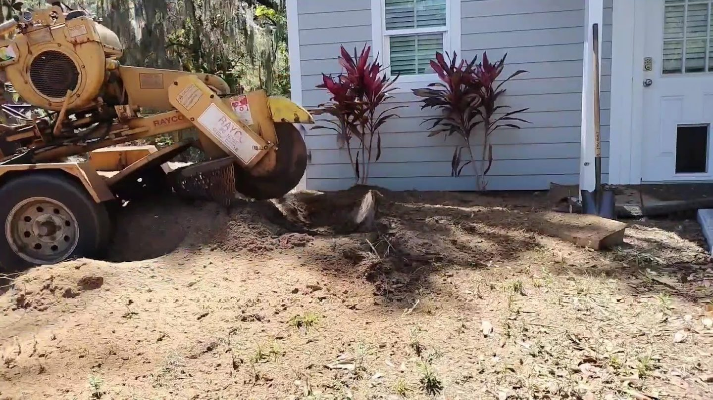
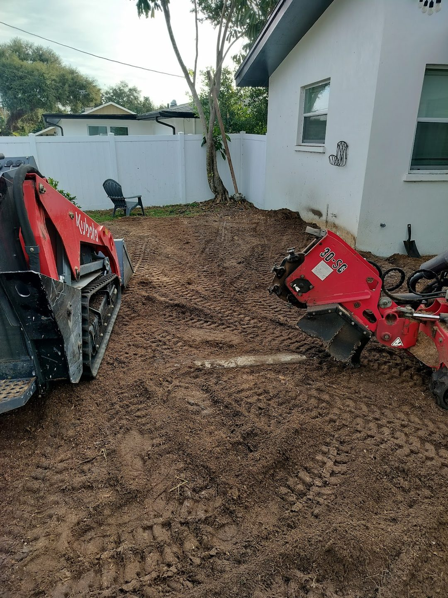
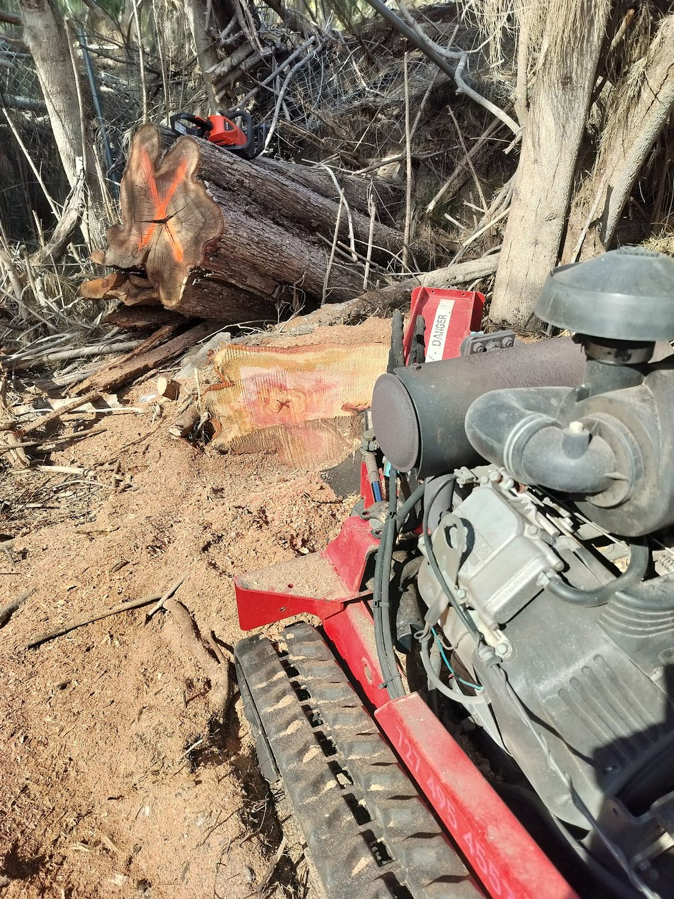
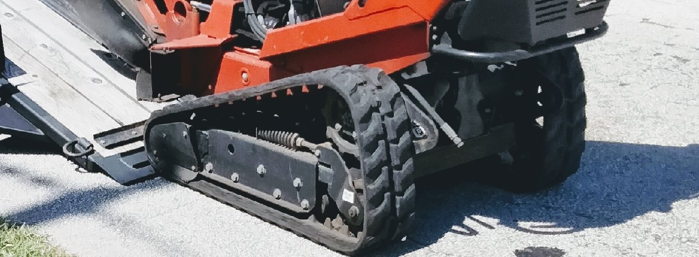
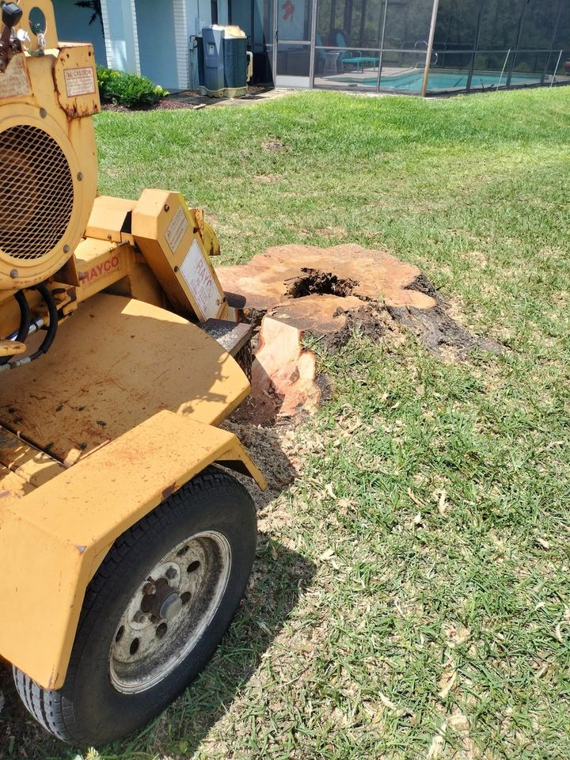
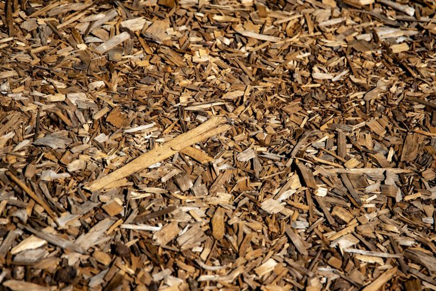
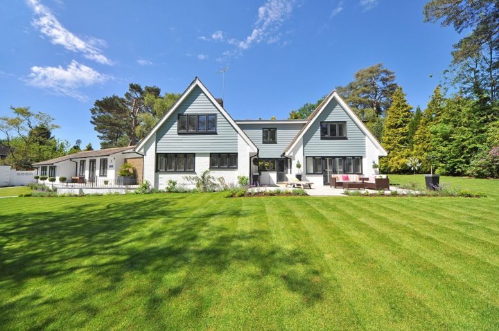
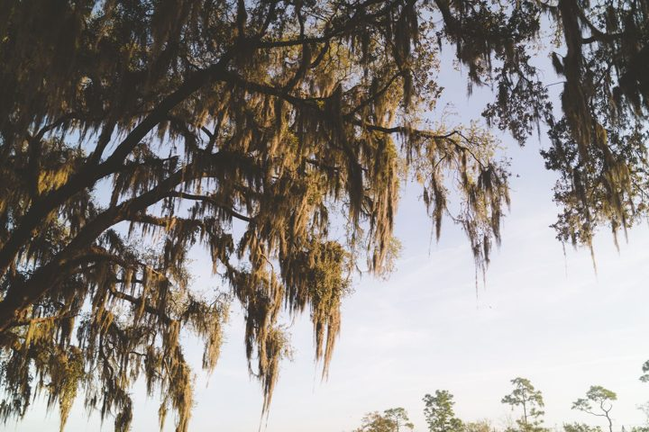

Stumps
gone. Lawn
back.
Stump grinding, root grinding and small-lot clearing in Clearwater and across Pinellas County. Text a photo of the stump and its rough width to start.


Stump & brush Cleared & levelledRing 01 · Stump to ground
From a stump in the brush to open, level dirt.
Drag the yellow ring across. On one side, one of their grinders is working into a large stump with cut logs and brush all around it. On the other, a cleared, levelled yard sits between a white house and a white fence, with two tracked machines parked on it.
Both photos are their own. Two of the job photos the business has shared, set side by side.
Start with a photo of your stumpRing 02 · Counted from the centre out
Five rings. One stump-free yard.
Tap a ring. The centre is an illustrative stock photo of a cut stump.
The grinder's wheel works the stump down where it stands and turns the wood to chips. Tell us how many stumps and roughly how wide they are.
When the stump needs to come out of the ground, not just come down, ask for removal and we will talk through the spot with you.
Surface roots running out from the stump can be ground too, so they stop catching mower blades and bare feet.
Once the grinding is done, the chips and loose soil are dealt with so the spot looks finished, not chewed. Say how you want it left.
Stumps, brush and cut wood cleared off a small lot, back to open ground like the yard in the slider above.
Ring 03 · The machines
Tracks for the tight spots. Wheels for the open ones.
Their photos show both kinds of grinder: a tracked machine that drives itself in on its own tracks, and tow-behind grinders that roll in on wheels.
Stump behind a fence, a pool cage or a narrow side yard? Text a photo of the way in along with the stump, and ask which machine suits your yard.
Text the way in
Home ground
Clearwater· Pinellas County ·
Based in Clearwater, FL 33760, working Clearwater and Pinellas County.
Clearwater Memorial Causeway. Photo: Andrew Heneen, CC BY 4.0, via Wikimedia Commons.
Ring 04 · Cross-section
A yard, cut across.
Their own job photos, cut into rings, with a few illustrative stock shots of what a stump turns into. Swipe
1Grinder into a big stump, logs and brush all round. Their photo 2Levelled dirt yard, house on one side, fence on the other. Their photo 3Fresh grindings beside the house and the ti plants. Their photo 
4Ground stump on the lawn, pool cage behind. Their photo 
5Fresh wood chips, close up. Illustrative stock 
6A wide green lawn in front of a home. Illustrative stock 
7Spanish moss on live oak branches. Illustrative stock 8Tracks on the trailer ramp. Their photo
Ring 05 · The outer ring is you
Send a photo. Get a straight answer.
- Call(727) 495-4557
- Text a photo(727) 495-4557
- Emailstumpremovalnearmellc@gmail.com
- FacebookStump Removal Near Me
- AreaClearwater, FL & Pinellas County
Questions, counted out
Before you send the photo.
01Grinding or full removal: what is the difference?
Grinding cuts the stump down where it stands and turns the wood into chips. Removal takes the stump out of the ground. Both are on the list; tell us what the spot is for next (lawn, planting, a path) and we will say which one fits.
02What happens to the chips?
Grinding leaves a mound of chips and soil where the stump was. Yard clean-up after grinding is one of the services, so say whether you want the chips left as mulch or cleaned up when you ask for a quote.
03The roots run toward the house or the pool cage. Can you grind those?
Root grinding is one of the services. Send a photo that shows the stump, the roots and what sits close by (a wall, a pool cage, a fence) so the job can be judged before anyone arrives.
04What should I text you?
A photo of the stump with something next to it for scale, its rough width across the top, how many stumps there are, and your part of Clearwater or Pinellas County. Text it to (727) 495-4557.
05Do you clear whole lots?
Land clearing for small lots is one of the services: stumps, brush and cut wood on a small property. A few photos of the whole lot help us understand the job.